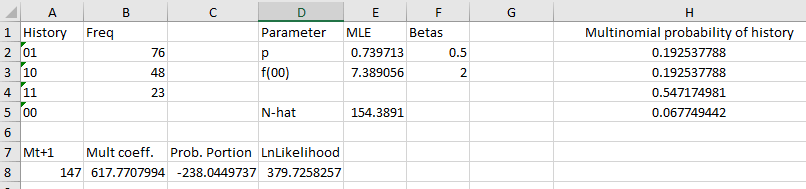
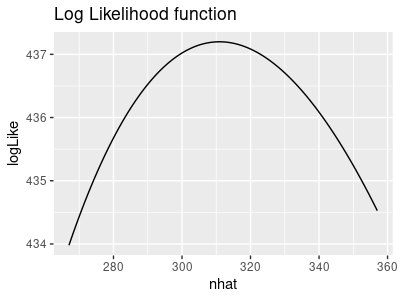
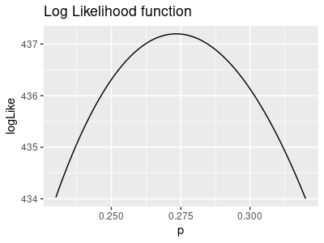

The Lincoln-Petersen method has a long history, but it isn't considered a modern method of estimating population size. Even though it's possible to express the estimator in terms of encounter probability (n1/p), it isn't easy to ground LP within a rigorous statistical framework.
In contrast, modern likelihood-based methods allow us to not only estimate population size, and obtain profile likelihood confidence intervals for the estimate, they allow us to evaluate hypotheses about the characteristics of our sampling procedure (i.e. trap happiness or trap shyness), and about the ecology of the organisms we are working with (i.e. changes in encounter probability over time). The basic approach you will learn today can be modified to allow multiple trapping periods, to allow open populations, to estimate survival probability, and to accommodate differences in capture probabilities from time to time, or after first capture. Once you understand the basic approach, a whole suite of methods start to make sense.
But today we will focus on the method, and keep the analysis simple - we will analyze the same coast horned lizard "data" we used to learn the Lincoln-Peterson method, but this time using maximum likelihood methods for estimating population size.
Sometimes likelihood functions are simple enough that it's possible to solve for the parameters we are estimating - estimates found by analyzing the likelihood function are called "analytical solutions". But sometimes the structure of the likelihood function doesn't allow us to analytically solve for parameters of interest, and we have to use approximate (or "numeric") solutions instead. A numeric solution is found by trying out different possible values for parameters we're estimating until we get as close as we need to be to the solution - for example, we would only ever need to know the population size to the nearest whole animal, so when we get a solution that is accurate to the nearest 0.1 animal we are close enough.
The basic approach is illustrated in the app below. Frequencies for capture histories 01, 10, and 11 are based on observed data - these animals were actually captured at least once, and were marked and counted when they were captured. The two unknowns are the frequency of the animals never caught, which we will call f(00), and the probability of encountering a lizard in a single sample, which we call p. The bar chart shows the observed frequencies, and the expected values for each history. The expected values are the probabilities of the histories multiplied by the total animals, both observed and estimated - 147 animals were captured, so setting the initial value of f(00) of 100 means that the estimate of the total is 147 + 100 = 247 to begin. The one "observed" bar that is not really observed is the f(00) bar, which is being used as though it's observed for the purposes of calculating the expected values, but it's actually an unknown that we're estimating - I've made its bar a lighter blue to distinguish it from the actual observed data.
The likelihood function is shown as the surface plot to the right - it is 3 dimensional because we have two unknowns (p and f(00), each of which are an axis on the base of the graph, which are the x and y axes) and the multinomial likelihood of the model the particular combination of the unknowns (which is the height of the curve, on the z-axis). The likelihood of the currently selected values for p and f(00) shown as a red dot - not a very high likelihood, so these are not good estimates given the data.
As you change the values of p and f(00) the graphs change - changing f(00) changes the height of the "observed" bar for 00, and since the total is changing the expected bars change as well. Changing p changes the probabilities of the capture histories, and the relative heights of the expected counts change. The goal is to maximize the likelihood, which will happen when the observed and expected bars get as close as you can given the way we're calculating the probabilities of capture - for example, 01 and 10 have the same probability, but have different observed frequencies, so it isn't possible to make the observed and expected values equal each other exactly if we assume the probability of encounter is always the same - we'll relax that assumption next time, but for now we'll stick with the assumption that p is a single value that we need to estimate, but it's the same for both trapping periods.
Try to pick values for p and f(00) that maximize the likelihood - get the bars as close to each other as possible, and the red dot will climb to the top of the likelihood surface.
|
p: f(00): |
, N̂ = 247 |
This sort of trial and error method is a form of numerical solution, but not a very sophisticated one. Excel supports much better numerical methods with an extension package called the Solver. To use the solver we need to have:
This is essentially what you did with the app above - you tried out different values of p and f(00) and got the likelihood as high as possible, but we will use Solver to get the answer quickly and to a much higher level of precision.
1. Set up a worksheet for ML estimation. Switch to the worksheet called "ML Estimates". You'll see that I've already done a little work for you - you have all four of the possible capture histories entered in Column A (labeled "History"), and frequencies of the three histories that can be observed in column B (labeled "Freq").
We are going to estimate two parameters from these data. The first is the encounter probability, which we will call "p". The next is the frequency of the "00" capture history, which we will call f(00); remember, this is the number of animals that were never captured. Since there are only four possible capture histories, 10, 11, 01, and 00, and every animal in the population must have one of them, once we have an estimate for the frequency of f(00) we can estimate population size as the sum of the frequencies of all these histories. Now we need to set up the cells that will hold these estimates:
In cell D1 type "Parameter". In cell D2 type "p", and in cell D3 type "f(00)".
In cell E1 type "MLE". This is where the estimates of f(00) and p will go.
In column F1 type "Betas". These will be the values we actually have Solver vary, as these will be the parameters for our link functions.
So, what's a link function, you say? Glad you asked.
Solver works by changing your input cells, and observing how the change affects the objective cell. We could have Solver change the parameters directly, but it doesn't know what our parameters represent, and thus doesn't know what values are possible and what values are impossible. For example, p is a probability, which means it has to fall between 0 and 1, but Solver doesn't know that. To keep Solver from selecting impossible values, we can use a link function that prevents p from falling outside of the 0,1 range, no matter what value Solver selects. To accomplish this we will use the sin link function.
The sin link function takes any positive or negative value we enter in the Betas column and takes the sin of it, adds 1, and then divides by 2. For any input value the sin function returns values that are between -1 and 1. Adding 1 to the sin function puts the result between 0 and 2, and dividing 2 puts the result between 0 and 1 no matter what we use as an input value.
So, in cell F2 type a starting "beta" value of 0.5. Now, in cell E2 type =(sin(f2)+1)/2. Now we will get a value in E2 that is a probability no matter what beta value Solver tries out in cell F2. This will give you a starting LME for p of 0.739713.
Solver also doesn't know that f(00) is a frequency (i.e. a count), and that frequencies can't be negative. The exp() function is a good choice of link function for non-negative parameters - this is called the "log link", because exp() raises the base of the natural logs (e) to the power of whatever is entered as an argument. Negative exponents, like e-β, are equivalent to 1/eβ, so as the beta value becomes an increasingly large negative number the function becomes an increasingly small decimal number that approaches 0 - since 1/eβ cannot be negative no matter what positive or negative value of β is used the log link function prevents Solver from considering negative f(00) values.
In cell F3 type a 2 as an initial value for the beta, and in cell E3 type =exp(f3). You should have a starting MLE value for f(00) of 7.389056.
2. Calculate the probabilities of each history. Type "Multinomial probability of history" in cell H1. The probability of not being encountered in a single capture period is 1-p. Since an individual can only either be captured or not captured, p and (1-p) are probabilities of all of the two possible outcomes, and they will sum to 1.
However, a capture history is the outcome of two different capture periods. The probability of a history is the probability of the first event occurring and the probability of the second event occurring - as you may remember from your stats classes, "and" tells us to multiply probabilities together. The probabilities of the histories are therefore:
|
History |
Probability |
|
01 |
(1-p)p |
|
10 |
|
|
11 |
|
|
00 |
(1-p)(1-p) |
You just need to translate these into Excel formulas - in cells H2 through H5 enter formulas that calculate these probabilities. Make sure you point to the estimate of p in E2, and not to the betas in F2. If all goes well, your probabilities should be 0.192538 for histories 01 and 10, 0.547175 for history 11, and 0.067749 for history 00.
3. Calculate the log of the multinomial coefficient. If you recall from lecture, the likelihood function has two parts: the multinomial coefficient (the counting part, which gives the number of different ways to obtain our set of frequencies), and the probability part (which is the probability of any one of the many possible ways to obtain our set of frequencies). We will start with the multinomial coefficient.
The multinomial coefficient is the number of different ways to have gotten the set of frequencies that we observed. It is a very large number, calculated from even larger numbers. The formula for the multinomial coefficient is N!/(x11!x10!x01!x00!), and to use it directly we would need to calculate the factorial of the total population size, which is a problem. Excel is not capable of calculating factorials for numbers over 170 (try it - in an empty cell type =fact(170), and in another empty cell type =fact(171)). We would have trouble using a method that restricted us to estimating populations that are 170 or smaller, so we need a different calculation method.
Fortunately for us, we don't actually need to calculate a likelihood, we only need a log-likelihood. It turns out we can calculate the log of a factorial in Excel using the gammaln() function.
The f(00) estimate shows up in two ways in the multinomial coefficient. The numerator of the coefficient is N!, but the total number of individuals includes the known total individuals trapped so far (which we will call Mt+1, which is the sum of the frequencies of the observed histories 01, 10, 11) as well as the unknown f(00). We can thus express N! as (Mt+1 + f(00))!. The denominator of the coefficient has f(00) in it directly, which is x00!. On a log scale this product of factorials become a sum of logs of factorials, which makes it possible for us to drop the logs of the factorials for the three known frequencies - we need to calculate ln( (Mt+1 + f(00))! ) - ln(f(00)!) for our likelihood function.
As you learned in lecture, we can calculate the log of a factorial using the Excel formula gammaln(). This converts the calculation to gammaln(Mt+1 + f(00) + 1) - gammaln(f(00) + 1) - note that this gets rid of the factorials, but we do need to add 1 to each argument. To do this calculation, do the following:
The multinomial coefficient in B8 should be 617.77...
4. Calculate the log likelihood. We have the log of the multinomial coefficient, but now we need to calculate the log of the probability part. The probability part is based on the probability of the capture histories, in column H. The log of the probability part is just the frequency of each capture history (from column B) multiplied by the log of the probability of the capture history (in column H), summed across the histories.
Your probability part in cell C8 should be -238.045.
To get the log-likelihood we just need to add the probability part to the multinomial coefficient part.
If all went well, your layout should look like this:
Congratulations! You're all ready to use maximum likelihood to estimate p and f(00).
4. Run Solver to get your estimates. First you need to start Solver. It may not be enabled yet - select the "Data" tab and look for it on the far right of the button bar, in the "Analysis" group.
If you don't see Solver in the Data tab, turn it on by going to File → Options → Add ins. At the bottom of the Add-ins window, find "Manage: Excel Add-ins" and click on "Go...". Check the box next to Solver Add-in, and click "OK". You should now have a Solver button in your Data tab.
Click on the Solver button to start it, and once it's open...
|
...you'll need to complete the following steps (as shown in this video):
Your estimates are in the MLE column, E (not the betas in F). **Note: by default the "Make unconstrained variables non-negative" box may be checked, and you need to un-check it. We're using link functions that take care of this, and we need Solver to be able to try values for the betas that are negative.** |
5. Interpret the results. You now have MLE's for p and f(00) - you'll see from the video that p should be 0.273, and f(00) should be 163.9.
The value for p tells you the probability that an animal would be trapped in a single capture period - you can interpret probabilities as proportions of a total, and proportions multiplied by 100 are percentages, so a p of 0.27 tells you that an estimated 27% of the animals in this population were trapped in each capture period.
The population size estimate is actually the sum of Mt+1 and f(00), which we haven't calculated yet. You can write "N-hat" in cell D5, and in E5 add these numbers. You'll see the estimate is not identical to the LP estimate you calculated last time, but it's fairly close.
You can look at the multinomial probabilities to see the probabilities of each capture history. Based on these estimates, the probability of not being caught in either trapping period (that is, the probability of history 00) was 0.528, so an estimated 52.8% of the population was never captured, and 47.2% was captured at least once during the study.
6. Assess model fit. The other thing you can look at is the "goodness of fit" of the model to the data. Conceptually, our model for these data is that there is a single probability of capture in both capture periods, and now that we have an estimate for what that probability is our probabilities of capture histories in column H give the distribution of individuals in the population into the four possible capture histories. One of the consequences of this simple model is that the probability of 01 and 10 histories is the same - they are (1-p)p and p(1-p), but since order doesn't matter in multiplication these products are the same. But, if you look at the observed frequencies, we got many more 01 histories than 10, so this simple model may not be very accurate.
The probabilities of the histories in column H are the relative frequencies we expect for the capture histories, but these are hard to compare with the counts, so we can convert them to predicted frequencies by just multiplying the estimated population size in cell E5 by the probabilities of the capture histories:
The fact that the 01 and 10 histories have the same probability but different frequencies is an indication that our model is too simple. We'll learn next time how to change the model to allow for different encounter probabilities at each capture period, and to allow for trap response (i.e. an increase or decrease in encounter probability after first capture). For now, just note that we have reason to want to try a different model so that our expected values for 01 and 10 can be different.
7. Calculate 95% CI's. We're going to profile the likelihood function to get 95% confidence intervals for N-hat (holding p constant) and for p (holding N-hat constant). The graphs below illustrate the process.
|
The likelihood function for a range of possible N-hat values, with p held constant at its ML value of 0.273, looks like this: |
We use the same likelihood function for p as we did for N-hat, but this time we keep N-hat at its ML value of 310.9 and use a range of possible p values - it looks like this: |
|  |
 |
|
Note that we estimated f(00) with Solver, but what we really want to know is the population size, estimated by N-hat. N-hat is just the sum of the frequencies for 01, 10, and 11 (which come from the data, and are known) plus f(00) (which we estimated). Since it is N-hat that we want to estimate, we call calculate the confidence interval for N-hat, not for f(00). The ML estimate of N-hat is 310.9, so the likelihood maximizes at that value. Click the graph once and the negative log-likelihood is shown - this is just the log-likelihood, but flipped to point upward. Click the graph again and the negative log-likelihood is positioned to touch the x-axis at y = 0 - this is done by subtracting the minimum value of the curve from the curve. Click again and the horizontal line at 1.92 is added in red - where the negative log likelihood function touches this line will be the lower and upper limits of the 95% confidence interval. Click one last time and the interval is shown in green - these are the values of N-hat that make the negative log likelihood equal 1.92, and are the upper and lower limits to the confidence interval. When you profile the likelihood yourself you'll see that the limits you get match these. |
The ML estimate of p is 0.273, so the likelihood maximizes at that value. Just like for N-hat, click once to get the negative log-likelihood. Click again to set the curve to minimize at y = 0. Click again for the horizontal line at 1.92, in red. Click once more to have the 95% confidence interval shown in green, where the horizontal line at 1.92 intersects the negative log likelihood. When you profile the likelihood yourself you can expect the upper and lower limits for p to match these values. |
Last time you did this procedure manually for the probability that a wasp would select a mated butterfly by finding the likelihoods that were (roughly) 1.92 units away from the maximum. This time you will let Solver find the places where the red line crosses the log likelihood function, to a much higher degree of precision than we did last time. First some setup:
Now, to find the upper and lower limits for N-hat, we need to find the two values of f(00) that make the difference in cell G10 equal to 1.92 - in other words, we will tell Solver to vary the beta for f(00) until G10 is equal to 1.92.
|
Record the value for N-hat in cell E5 as the upper limit for the 95% interval - copy and paste-special as values cell E5 into cell B15.
Copy the betas from A19 to A20 and paste them into F2 and F3 to set things back to the ML values.
Now repeat the process to get the lower limit for N-hat. Since we displaced the beta for f(00) slightly above its MLE you should end up with an estimate that's higher than before, so this is your upper limit. Copy the new N-hat from cell E5 and paste-special the value to cell B15.Now, to get the lower limit you need to displace f(00) to be slightly below the MLE estimate - set the beta to 5, and run Solver again. Since we started below the MLE Solver should find the lower limit this time. Copy and paste-special the value for N-hat from E5 as the Lower limit (cell B14).
Copy the betas from A19 to A20 and paste them into F2 and F3 to set things back to the ML values.
Copy the current value of p from E2, and paste as a value into cell C13.
You can now use Solver again to find the upper and lower limits for p - this time, have Solver set the difference in G10 to 1.92 by changing the beta in cell F2, but leave F3 at its ML value. Use a beta of -0.48 in cell F2 to find the lower limit for p, and -0.46 to find the upper limit. Don't forget to copy/paste special the value of p each time to the appropriate Lower or Upper cell (either C14 or C15).
That's it for today. Save your Excel sheet onto your S: drive - we'll use the Mo, Mt, Mb, and AIC sheets next time.